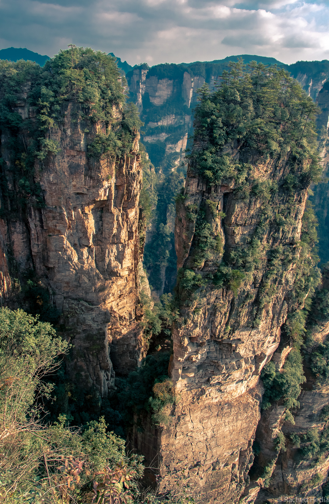

Zhangjiajie, les collines d'Avatar
Pour notre dernière étape en Chine, destination : le parc national de Zhangjiajie (du nom de la ville qui se situe à côté). Une petite pépite à découvrir dans la province du Hunan !
Hein ? quoi ?! Phonétiquement on dirait “djan-dja-djé”. Et vous me le copierait 10 fois pour l’orthographier correctement !
Le parc national forestier de Zhangjiajie fait en réalité partie du parc national de Wulingyuan. Soyons précis ! C’est d’ailleurs ce nom qui est repris dans le guide du routard.
Ce lieu a, dit-on, inspiré l’univers du célèbre film de James Cameron, Avatar…
Ça y est, vous commencez à vous imaginer le décor ?
Des paysages grandioses : une forêt de pics d’une superficie de 397 km2, au total 3000 colonnes de grès dont la hauteur atteint parfois plus de 200 mètres.

Vu d’en bas, on parvient difficilement à voir l’extrémité de ces pics qui semblent percer le ciel.
Plusieurs sentiers permettent de grimper au sommet. Des milliers de marches… Ça nous chauffe les cuisses. On n’hésite pas à faire des pauses pour apprécier la vue.
Une fois en haut, on a l’impression d’avoir quitté la Terre. On est comme parvenu dans un autre monde.
Les vues sont spectaculaires et vertigineuses. Sur les sentiers à flanc des pics, en se penchant à peine, on se sent happé par le vide sous nos pieds.
Quelques panneaux sont là pour nous expliquer les phénomènes géologiques qui se sont déroulés pendant 380 millions d’années pour façonner ce paysage atypique.
Mais il est difficile de se résoudre à ces explications rationnelles. Nous restons émerveillés par ce monde qui nous paraît imaginaire, admiratifs de la beauté que la nature est capable d’engendrer.
Accès au parc
Comme nous logions à Wulingyuan, nous sommes toujours entrés et sortis par l’entrée nord-est du parc, qui était accessible directement à pied.
Aux guichets situés à l’entrée, nous avons acheté un pass valable 4 jours, qui coûte 225 yuans/pers.
Une fois à l’entrée, il est obligatoire de prendre une navette pour arriver aux sentiers de randonnée. Idem au retour pour regagner l’entrée. Il n’y a aucun sentier de randonnée qui démarre directement depuis l’entrée. Mais des navettes circulent en continu et les trajets durent 15 à 20 minutes donc ce n’est pas un problème.
Un plan du parc était disponible sur place à notre auberge et le propriétaire des lieux nous a très bien renseigné sur les itinéraires possibles.
En effet on ne peut pas passer comme on veut d’une section du parc à une autre, à moins de louer une voiture.
Vous devrez donc planifier votre journée en fonction des connections qui existent entre les différentes sections (navette, téléphérique ou chemin de randonnée). Je vous ai détaillé plus bas notre itinéraire sur 3 jours.
Zhangjiajie est encore peu connu des touristes du monde entier et principalement fréquenté par des touristes chinois.
Qui dit touristes chinois, dit des groupes de 20 personnes !
Donc même en arrivant à 8h à l’entrée du parc, on est pas tout seul… Heureusement, ces groupes de visiteurs empruntent les téléphériques qui les mènent directement aux points de vue. Donc une fois sur les sentiers de randonnée, youpi on est enfin seul.
Sachez que les sentiers sont cimentés et parfaitement balisés. Mais l’immersion est telle qu’on en fait vite abstraction.
La section du parc offrant les vues les plus spectaculaires, Yuangjiajie, est toujours bondée. Mais si vous passez plusieurs jours dans le parc, vous aurez bien d’autres occasions de vous retrouver seuls.
Notre itinéraire de 3 jours
Trois journées pleines (8h-18h) nous ont permis de découvrir les différents sites.
Pour prendre le temps d’explorer les différentes sections du parc, comptez minimum 2 jours, idéalement 3.
Nous avons préféré tout faire à pied à l’intérieur du parc. Mais sachez qu’il est possible d’emprunter des téléphériques (payants) qui peuvent vous faire gagner beaucoup de temps.
Comme je le disais plus haut, si vous n’êtes pas véhiculés, il faudra planifier votre itinéraire à l’avance en tenant compte des liaisons possibles pour être sûr d’avoir le temps de faire le chemin retour (un peu comme au ski !).
A titre d’exemple, je vous décris ci-dessous notre itinéraire de 3 jours.
-
Jour 1 : Navette jusqu’au sentier Golden Whip Stream puis Huangshi Village par les escaliers. Chemin inverse pour rentrer. Navette retour jusqu’à l’entrée nord-est du parc.
-
Jour 2 : Navette jusqu’au sentier Ten-mile Natural Gallery puis Tianzi Mountain puis navette jusqu’à Yuangjiajie (section du parc la plus visitée) puis navette jusqu’à Bailong Elevator. Descente par ascenseur, 72 yuans/pers (pas si impressionnant que ça). Navette retour jusqu’à l’entrée nord-est du parc.
-
Jour 3 : De nouveau, navette jusqu’au sentier Ten-mile Natural Gallery puis Tianzi Mountain pour pouvoir prendre la navette allant à Yangjiajie et retour en passant par Yuangjiajie qui rejoint le sentier Golden Whip Stream. Navette retour jusqu’à l’entrée nord-est du parc.
Hébergement
Nous avons choisi de séjourner à l’auberge Destination Youth Hostel, située à à Wulingyuan.
Très bonne auberge, à 5 minutes à pied de l’entrée nord-est du parc.
Chambre double avec salle de bain privative, 15€ la nuit, dans un décor de bois et pierres comme un petit chalet de montagne.
Tianzi Mountain, tout au Nord, peut être une bonne option pour séjourner car il y a plusieurs connections directes en navette vers les autres sections du parc.
Transport de Yangshuo à Zhangjiajie
Nous nous sommes rendus à Zhangjiajie depuis Yangshuo (situé plus au sud, dans la province du Guangxi). Il n’y a pas de trajet direct pour se rendre à Zhangjiajie mais une pépite pareille ça se mérite !
Je vous livre donc tous les détails de notre trajet depuis Yangshuo pour vous dire que oui c’est faisable et qu’il faut y aller !
1. Taxi depuis notre auberge à Yangshuo jusqu’à Yangshuo bus station, 30 yuans.
2. Bus de Yangshuo à Guilin, 1 heure, 30 yuans/pers.
3. A Guilin, il faut prendre un bus pour se rendre à Guilin Railway station, bus K99, 2 yuans/pers.
Attention, bien suivre le trajet avec Maps.me pour savoir où descendre. On a eu du mal à trouver l’arrêt. On est descendu un peu trop tôt et avons fini à pied.
Dans un pays autre que la Chine, je vous aurais dit de vous adresser au chauffeur ou à un passager. Mais ici impossible de se comprendre, on en a fait l’expérience: Rached se servant de Google traduction, moi faisant des mimes et le passager nous répondant en chinois. Un vrai dialogue de sourd !
4. Une fois à Guilin Railway station, prendre le train pour Liuzhou, 1 heure, 9€/pers (réservé à l’avance sur Trip.com).
5. A la gare de Liuzhou, prendre un taxi pour la gare de Liujiang, 53 yuans.
6. A la gare de Liujiang, prendre le train de nuit pour Zhangjiajie (réservé à l’avance sur Trip.com).
Le prix varie en fonction du type de couchette : Soft sleeper, 36€/pers ou Hard sleeper, 24€/pers.
A l’aller nous avons réservé en Soft sleeper, cabine de 4 couchettes (2 lits superposés) avec une porte qui ferme.
Au retour, plus aventuriers, nous avons essayé le Hard sleeper, cabine de 6 couchettes, de la même taille que les cabines de 4, avec un lit supplémentaire au dessus. C’est un peu plus serré mais encore supportable même pour une claustro comme moi. Le matelas est un peu plus fin mais il y a bien un matelas !
La cabine n’a pas de porte donc donne directement sur le couloir mais les lumières dans le wagon sont éteintes à partir d’une certaine heure.
Le Hard sleeper est donc une bonne option surtout si vous devez faire attention à votre budget de voyage.
De l’eau chaude est disponible dans le train donc vous pourrez déguster votre savoureux bol de noodles à bord. Un conseil, achetez le à Guilin car la gare de Liujiang est minuscule.
7. J+1, on y est presque ! Il ne nous reste plus qu’à rejoindre notre hébergement situé à Wulingyuan. Se rendre dans le bâtiment sur la gauche en sortant de la gare de Zhangjiajie. Il y a plusieurs bus qui attendent. Prendre le bus pour Wulingyuan, 14 yuans/pers.
Vous l’aurez sans doute compris… Pour nous, le parc national de Wulingyuan a été une belle découverte. Et nous ne pouvons que vous conseillez d’y aller.
Rendez-vous prochainement pour la suite de nos aventures à Hong Kong.
S'abonner à Le Monde Etcetera
Recevez les derniers posts directement dans votre boîte mail !